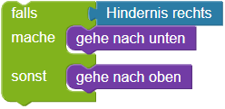

Labyrinth
Der Roboter soll das Feld mit der roten Flagge  erreichen, ohne gegen die Hindernisse
erreichen, ohne gegen die Hindernisse  zu laufen.
zu laufen.
Bitte schau dir vorab die Erläuterungen der Bausteine unter "weitere Hinweise" an.
Bitte schau dir vorab die Erläuterungen unter "weitere Hinweise" an.
Weitere Hinweise:
Um zu testen, ob sich rechts vom Roboter ein Hindernis befindet, benutze den Baustein .
Um zum Beispiel den Roboter nach unten zu bewegen, falls sich rechts von ihm ein Hindernis befindet, kannst du schreiben:

Um zum Beispiel den Roboter nach unten zu bewegen, falls sich rechts von ihm ein Hindenis befindet, und ihn andernfalls nach oben zu bewegen, kannst du schreiben:

Um zu testen, ob sich vor dem Roboter ein Hindernis befindet, benutze die if-Kontrollanweisung.
Um zum Beispiel den Roboter nach unten zu bewegen, falls sich rechts von ihm ein Hindernis befindet, kannst du schreiben:
if hindernisRechts():
unten()
Um zu testen, ob sich vor dem Roboter ein Hindernis befindet, benutze die if/else-Kontrollanweisung.
Um zum Beispiel den Roboter nach unten zu bewegen, falls sich rechts von ihm ein Hindenis befindet, und ihn andernfalls nach oben zu bewegen, kannst du schreiben:
if hindernisRechts():
unten()
else:
oben()
Um mehr als eine Bedingung zu prüfen, benutze die if/elif/else-Kontrollanweisung.
if hindernisRechts():
unten()
elif hindernisOben():
rechts()
else:
oben()
Wenn ein Hinternis rechts ist, dann geht der Roboter nach unten. Da eine Bedingung "True" war, wird der elif Fall nicht überprüft. Wenn aber kein Hindernis rechts ist, dann wird überprüft, ob ein Hindernis oben ist. Je nachdem, ob dies "True" oder "False" ist, wir der elif oder der else Block ausgeführt.
Der else Block wird also nur ausgeführt, wenn keine der Bedingungen "True" war.
Die Flagge ist 16 Felder rechts vom Roboter. Die Flagge ist 22 Schritte vom Roboter entfernt. Die Flagge ist 24 Schritte vom Roboter entfernt. Die Flagge ist 25 Schritte vom Roboter entfernt.